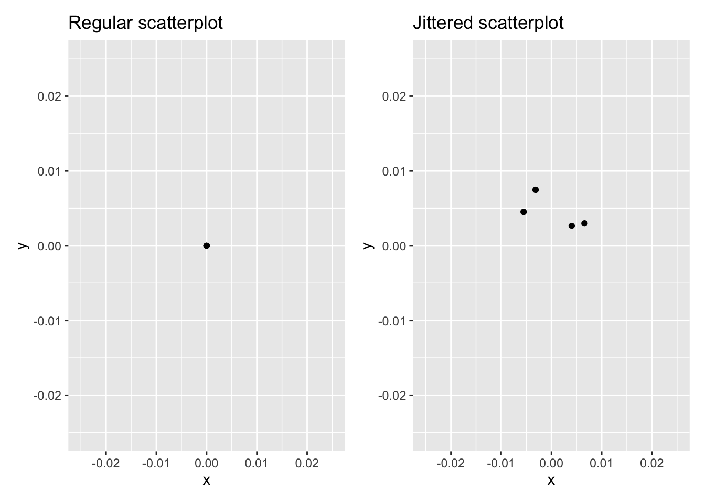
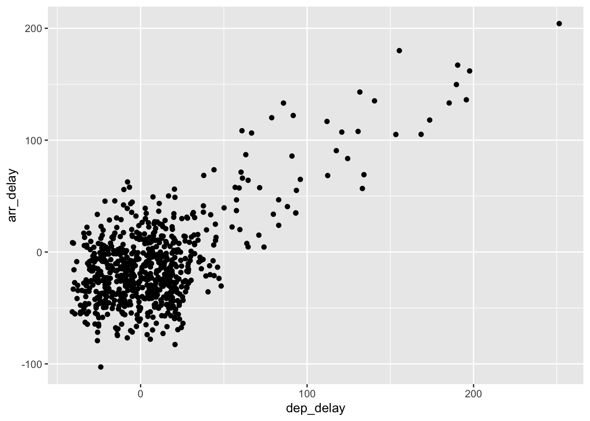
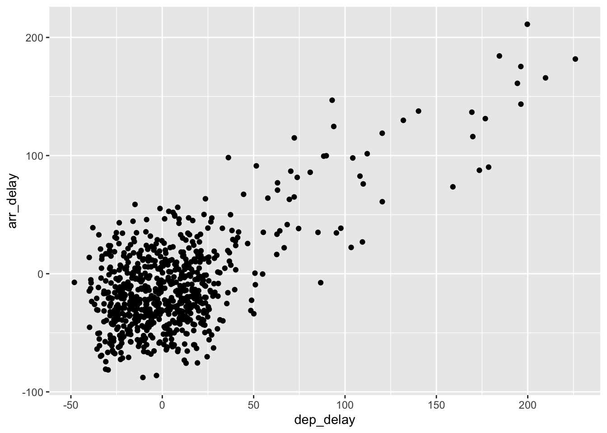
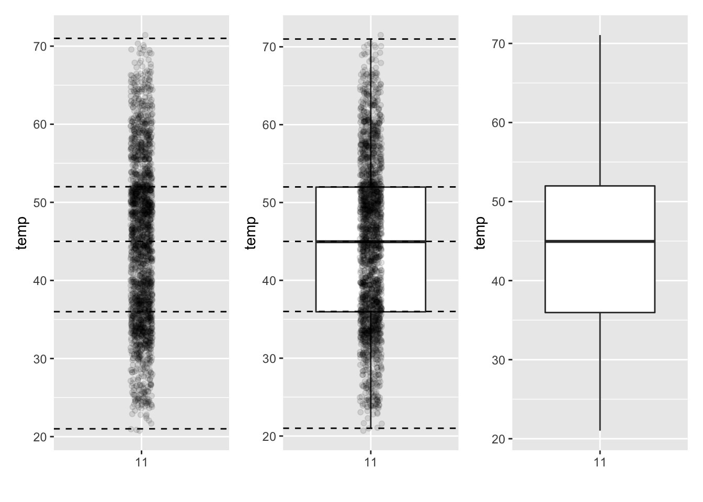
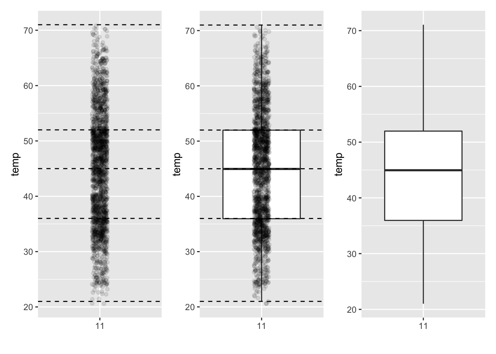

Chapter 1 Visualization
Before we can start exploring data in R, there are some key concepts to understand first:
- What are R and RStudio?
- How do I code in R?
- What are R packages?
We’ll introduce these concepts in the upcoming sections. If you are already somewhat familiar with these concepts, feel free to skip to later in the chapter where we’ll introduce our first dataset: data for attitudes toward immigration-related policies.
1.1 What are R and RStudio?
 FIGURE 1.1: Analogy of difference between R and RStudio.
FIGURE 1.1: Analogy of difference between R and RStudio.
Throughout this book, we assume that you are using R via RStudio. First time users often confuse the two. At its simplest, R is like a car’s engine while RStudio is like a car’s dashboard.
More precisely, R is a programming language that runs computations, while RStudio is an integrated development environment (IDE) that provides an interface by adding many convenient features and tools. So just as the way of having access to a speedometer, rearview mirrors, and a navigation system makes driving much easier, using RStudio’s interface makes using R much easier as well.
1.1.1 Installing R and RStudio
You will first need to download and install both R and RStudio (Desktop version) on your computer. It is important that you install R first and then install RStudio.
You must do this first: Download and install R by going to https://cloud.r-project.org/.
You must do this second: Download and install RStudio at https://www.rstudio.com/products/rstudio/download/.
1.1.2 Using R via RStudio
 FIGURE 1.2: Icons of R versus RStudio on your computer.
FIGURE 1.2: Icons of R versus RStudio on your computer.
Recall our car analogy from earlier. Much as we don’t drive a car by interacting directly with the engine but rather by interacting with elements on the car’s dashboard, we won’t be using R directly but rather we will use RStudio’s interface. After you install R and RStudio on your computer, you’ll have two new programs (also called applications) you can open. We’ll always work in RStudio and not in the R application.
 FIGURE 1.3: RStudio interface to R.
FIGURE 1.3: RStudio interface to R.
(Note that slight differences might exist from the figure if the RStudio interface is updated after 2019 to not be this by default.)
After you open RStudio, you should see three panes, or panels, dividing the screen: the console pane, the files pane, and the environment pane. Over the course of this chapter, you’ll come to learn what purpose each of these panes serves.
1.2 How do I code in R?
Now that you’re set up with R and RStudio, you are probably asking yourself, “OK. Now how do I use R?”. The first thing to note is that unlike other statistical software programs like Excel, SPSS, or Minitab that provide point-and-click interfaces, R is an interpreted language. This means you have to type in commands written in R code. In other words, you have to code/program in R. Note that we’ll use the terms “coding” and “programming” interchangeably in this book.
If you are new to the world of coding, R, and RStudio and feel you could benefit from a more detailed introduction, we suggest you check out the short book, Getting Used to R, RStudio, and R Markdown. It includes screencast recordings that you can follow along and pause as you learn. This book also contains an introduction to R Markdown, a tool used for reproducible research in R.
While it is not required to be a seasoned coder/computer programmer to use R, there is still a set of basic programming concepts that new R users need to understand.
1.2.1 Tips on learning to code
Learning to code/program is quite similar to learning a foreign language. It can be daunting and frustrating at first. Such frustrations are common and it is normal to feel discouraged as you learn. However, just as with learning a foreign language, if you put in the effort and are not afraid to make mistakes, anybody can learn and improve.
Here are a few useful tips to keep in mind as you learn to program:
- Remember that computers are not actually that smart: You may think your computer or smartphone is “smart,” but really people spent a lot of time and energy designing them to appear “smart.” In reality, you have to tell a computer everything it needs to do. Furthermore, the instructions you give your computer can’t have any mistakes in them, nor can they be ambiguous in any way.
- Take the “copy, paste, and tweak” approach: Especially when you learn your first programming language or you need to understand particularly complicated code, it is often much easier to take existing code that you know works and modify it to suit your ends. This is as opposed to trying to type out the code from scratch. We call this the “copy, paste, and tweak” approach. So early on, we suggest not trying to write code from memory, but rather take existing examples we have provided you, then copy, paste, and tweak them to suit your goals. After you start feeling more confident, you can slowly move away from this approach and write code from scratch. Think of the “copy, paste, and tweak” approach as training wheels for learning to ride a bike. After getting comfortable, you won’t need them anymore.
- The best way to learn to code is by doing: Rather than learning to code for its own sake, we find that learning to code goes much smoother when you have a goal in mind or when you are working on a particular project, like analyzing data that you are interested in and that is important to you.
- Practice is key: Just as the only method to improve your foreign language skills is through lots of practice and speaking, the only method to improving your coding skills is through lots of practice. Write R code every day.
1.2.2 Basic programming concepts and terminology
We now introduce some basic programming concepts and terminology. Instead of asking you to memorize all these concepts and terminology right now, we’ll guide you so that you’ll “learn by doing.” To help you learn, we will always use a different font to distinguish regular text from computer_code. The best way to master these topics is, in our opinions, through deliberate practice with R and lots of repetition.
- Console pane: where you enter in commands.
- Running code: the act of telling R to perform an act by giving it commands in the console.
- Objects: where values are saved in R. We’ll show you how to assign values to objects and how to display the contents of objects.
-
Data types: integers, doubles/numerics, logicals, and characters. Integers are values like -1, 0, 2, 4092. Doubles or numerics are a larger set of values containing both the integers but also fractions and decimal values like -24.932 and 0.8. Logicals are either
TRUEorFALSEwhile characters are text such as “cabbage”, “Hamilton”, “The Wire is the greatest TV show ever”, and “This ramen is delicious.” Note that characters are often denoted with the quotation marks around them. -
Vectors: a series of values. These are created using the
c()function, wherec()stands for “combine” or “concatenate.” For example,c(6, 11, 13, 31, 90, 92)creates a six element series of positive integer values. - Factors: categorical data are commonly represented in R as factors. Categorical data can also be represented as strings. We’ll study this difference as we progress through the book.
-
Data frames: rectangular spreadsheets. They are representations of datasets in R where the rows correspond to observations and the columns correspond to variables that describe the observations. Modern data frames are called tibbles.
-
Conditionals:
- Testing for equality in R using
==(and not=, which is typically used for assignment). For example,2 + 1 == 3compares2 + 1to3and is correct R code, while2 + 1 = 3will return an error. - Boolean algebra:
TRUE/FALSEstatements and mathematical operators such as<(less than),<=(less than or equal), and!=(not equal to). For example,4 + 2 >= 3will returnTRUE, but3 + 5 <= 1will returnFALSE. - Testing for inclusion with the
%in%operator. For example,"B" %in% c("A", "B")returnsTRUEwhile"C" %in% c("A", "B")returnsFALSE. - Logical operators:
&representing “and” as well as|representing “or.” For example,(2 + 1 == 3) & (2 + 1 == 4)returnsFALSEsince both clauses are notTRUE(only the first clause isTRUE). On the other hand,(2 + 1 == 3) | (2 + 1 == 4)returnsTRUEsince at least one of the two clauses isTRUE.
- Testing for equality in R using
-
Functions, also called commands: perform tasks in R. They take in inputs called arguments and return outputs. You can either manually specify a function’s arguments or use the function’s default values.
- For example, the function
seq()in R generates a sequence of numbers. If you just runseq()it will return the value 1. That doesn’t seem very useful! This is because the default arguments are set asseq(from = 1, to = 1). Thus, if you don’t pass in different values forfromandtoto change this behavior, R just assumes all you want is the number 1. You can change the argument values by updating the values after the=sign. If we try outseq(from = 2, to = 5)we get the result2 3 4 5, as we would expect. - We’ll work with functions a lot throughout this book and you’ll get lots of practice in understanding their behaviors. To further assist you in understanding when a function is mentioned in the book, we’ll also include the
()after them as we did withseq()above.
- For example, the function
-
Help files: provide documentation for various functions and datasets. You can bring up help files by adding a
?before the name of a function or data frame and then run this in the console. You will then be presented with a page showing the corresponding documentation if it exists.
This list is by no means an exhaustive list of all the programming concepts and terminology needed to become a savvy R user; such a list would be so large it wouldn’t be very useful, especially for novices. Rather, we feel this is a minimal list of programming concepts and terminology you need to know before getting started. We feel that you can learn the rest as you go. Remember that your mastery of all of these concepts and terminology will build as you practice.
1.2.3 Errors, warnings, and messages
One thing that intimidates new R and RStudio users is how it reports errors, warnings, and messages. R reports errors, warnings, and messages in a glaring red font, which makes it seem like it is scolding you. However, seeing red text in the console is not always bad.
R will show red text in the console pane in three different situations:
-
Errors: When the red text is a legitimate error, it will be prefaced with “Error in…” and will try to explain what went wrong. Generally when there’s an error, the code will not run. For example, if you see
Error in ggplot(...) : could not find function "ggplot", it means that theggplot()function is not accessible because the package that contains the function, ggplot2, was not loaded withlibrary(ggplot2). You cannot use theggplot()function without the ggplot2 package being loaded first. -
Warnings: When the red text is a warning, it will be prefaced with “Warning:” and R will try to explain why there’s a warning. Generally your code will still work, but with some caveats. If you create a scatterplot based on a dataset where two of the rows of data have missing entries, you will see this warning:
Warning: Removed 2 rows containing missing values (geom_point). R will still produce the scatterplot with all the remaining non-missing values, but it is warning you that two of the points aren’t there. -
Messages: When the red text doesn’t start with either “Error” or “Warning”, it’s just a friendly message. You’ll see these messages when you load R packages or when you read data saved in spreadsheet files with the
read_csv()function as you’ll see in Chapter 2. These are helpful diagnostic messages. They don’t stop your code from working. Additionally, you’ll see these messages when you install packages too usinginstall.packages().
Remember, when you see red text in the console, don’t panic. It doesn’t necessarily mean anything is wrong. Rather:
- If the text starts with “Error”, figure out what’s causing it. Think of errors as a red traffic light: something is wrong!
- If the text starts with “Warning”, figure out if it’s something to worry about. For instance, if you get a warning about missing values in a scatterplot and you know there are missing values, you’re fine. If that’s surprising, look at your data and see what’s missing. Think of warnings as a yellow traffic light: everything is working fine, but watch out/pay attention.
- Otherwise, the text is just a message. Read it, wave back at R, and thank it for talking to you. Think of messages as a green traffic light: everything is working fine and keep on going!
1.3 What are R packages?
Another point of confusion with many new R users is the idea of an R package. R packages extend the functionality of R by providing additional functions, data, and documentation. They are written by a worldwide community of R users and can be downloaded for free from the internet.
For example, among the many packages we will use in this book are the ggplot2 package for data visualization and the dplyr package for data wrangling.
 FIGURE 1.4: Analogy of R versus R packages.
FIGURE 1.4: Analogy of R versus R packages.
R is like a new mobile phone: while it has a certain amount of features when you use it for the first time, it doesn’t have everything. R packages are like the apps you can download onto your phone from Apple’s App Store or Android’s Google Play.
Let’s continue this analogy by considering the Instagram app for editing and sharing pictures. Say you have purchased a new phone and you would like to share a photo you have just taken with friends on Instagram. You need to:
- Install the app: Since your phone is new and does not include the Instagram app, you need to download the app from either the App Store or Google Play. You do this once and you’re set for the time being. You might need to do this again in the future when there is an update to the app.
- Open the app: After you’ve installed Instagram, you need to open it.
Once Instagram is open on your phone, you can then proceed to share your photo with your friends and family. The process is very similar for using an R package. You need to:
 FIGURE 1.5: Installing versus loading an R package
FIGURE 1.5: Installing versus loading an R package
- Install the package: This is like installing an app on your phone. Most packages are not installed by default when you install R and RStudio. Thus if you want to use a package for the first time, you need to install it first. Once you’ve installed a package, you likely won’t install it again unless you want to update it to a newer version.
- “Load” the package: “Loading” a package is like opening an app on your phone. Packages are not “loaded” by default when you start RStudio on your computer; you need to “load” each package you want to use every time you start RStudio.
Let’s perform these two steps for the ggplot2 package for data visualization.
1.3.1 Package installation
Let’s install the ggplot2 package. Type install.packages("ggplot2") in the console pane of RStudio and pressing Return/Enter on your keyboard. Note you must include the quotation marks around the name of the package.
1.3.2 Package loading
Recall that after you’ve installed a package, you need to “load it.” In other words, you need to “open it.” We do this by using the library() command.
For example, to load the ggplot2 package, run the following code in the console pane. What do we mean by “run the following code”? Either type or copy-and-paste the following code into the console pane and then hit the Enter key.
If after running the earlier code, a blinking cursor returns next to the > “prompt” sign, it means you were successful and the ggplot2 package is now loaded and ready to use. If, however, you get a red “error message” that reads ...
Error in library(ggplot2) : there is no package called ‘ggplot2’... it means that you didn’t successfully install it. This is an example of an “error message”. If you get this error message, go back to the subsection on R package installation and make sure to install the ggplot2 package before proceeding.
1.3.3 Package use
One very common mistake new R users make when wanting to use particular packages is they forget to “load” them first by using the library() command we just saw. Remember: you have to load each package you want to use every time you start RStudio. If you don’t first “load” a package, but attempt to use one of its features, you’ll see an error message similar to:
Error: could not find functionThis is a different error message than the one you just saw on a package not having been installed yet. R is telling you that you are trying to use a function in a package that has not yet been “loaded.” R doesn’t know where to find the function you are using. Almost all new users forget to do this when starting out. However, you’ll remember with practice and after some time it will become second nature for you.
1.4 Explore your first datasets
Let’s put everything we’ve learned so far into practice and start exploring some real data! Data comes to us in a variety of formats, from pictures to text to numbers. Throughout this book, we’ll focus on datasets that are saved in “spreadsheet”-type format. This is probably the most common way data are collected and saved in many fields. These “spreadsheet”-type datasets are called data frames in R. We’ll focus on working with data saved as data frames throughout this book. Again, “tibble” is the more modern term for “data frame,” but we will use both interchangeably.
The PPBDS.data package was created specifically for this textbook and contains datasets used throughout the book. The package can be installed directly from GitHub using the command remotes::install_github(“davidkane9/PPBDS.data”).
Let’s first load all the packages needed for this chapter, assuming you’ve already installed them.
1.4.1 trains data frame
See “Causal effect of intergroup contact on attitudes,” by Ryan D. Enos, Proceedings of the National Academy of Sciences, Mar 2014, 111 (10) for background and details on the trains dataset.
We’ll begin by exploring the trains data frame and get an idea of its structure. This dataset includes data for attitudes toward immigration-related policies, both before and after an experiment which randomly exposed a treated group to Spanish-speakers on a Boston commuter train platform. Individuals with a treatment value of “Treated” were exposed to two Spanish-speakers on their regular commute. “Control” individuals were not.
Run the following code in your console, either by typing it or by cutting-and-pasting it. It displays the contents of the trains data frame in your console. Note that depending on the size of your monitor, the output may vary slightly.
## # A tibble: 115 x 8
## gender liberal party age income att_start treatment att_end
## <chr> <lgl> <chr> <dbl> <dbl> <dbl> <fct> <dbl>
## 1 Female FALSE Democrat 31 135000 11 Treated 11
## 2 Female FALSE Republican 34 105000 9 Treated 10
## 3 Male TRUE Democrat 63 135000 3 Treated 5
## 4 Male FALSE Democrat 45 300000 11 Treated 11
## 5 Male TRUE Democrat 55 135000 8 Control 5
## 6 Female FALSE Democrat 37 87500 13 Treated 13
## 7 Female FALSE Republican 53 87500 13 Control 13
## 8 Male FALSE Democrat 36 135000 10 Treated 11
## 9 Female FALSE Democrat 54 105000 12 Control 12
## 10 Male FALSE Republican 42 135000 9 Treated 10
## # … with 105 more rowsLet’s unpack this output:
-
A tibble: 115 x 8: Atibbleis a specific kind of data frame in R. This particular data frame has-
115rows corresponding to different observations. Here, each observation is a person. -
8columns corresponding to 19 variables describing each observation.
-
-
gender,liberal,party,age,income,att_start,treatment, andatt_endare the different variables of this dataset. -
... with 105 more rows:indicating to us that 105 more rows of data could not fit in this screen. R is only showing the first 10 rows, because if it showed all115rows, it would overwhelm your screen.
Unfortunately, this output does not allow us to explore the data very well, but it does give a nice preview. Let’s look at some different ways to explore data frames.
1.4.2 Exploring data frames
There are many ways to get a feel for the data contained in a data frame such as trains. We present two functions that take as their “argument” (their input) the data frame in question. We also include a fourth method for exploring one particular column of a data frame:
- Using the
View()function, which brings up RStudio’s built-in data viewer. - Using the
glimpse()function, which is included in the dplyr package. - Using the
$“extraction operator,” which is used to view a single variable/column in a data frame.
1. View():
Run View(trains) in your console in RStudio, either by typing it or cutting-and-pasting it into the console pane. Explore this data frame in the resulting pop up viewer. You should get into the habit of viewing any data frames you encounter. Note the uppercase V in View(). R is case-sensitive, so you’ll get an error message if you run view(trains) instead of View(trains).
By running View(trains), we can explore the different variables listed in the columns. Observe that there are many different types of variables. Some of the variables including age, income, att_start, and att_end are what we will call quantitative variables. These variables are numerical in nature. Other variables here, including gender, liberal, party, and treatment, are categorical.
Note that if you look in the leftmost column of the View(trains) output, you will see a column of numbers. These are the row numbers of the dataset. If you glance across a row with the same number, say row 5, you can get an idea of what each row is representing. This will allow you to identify what object is being described in a given row by taking note of the values of the columns in that specific row. This is often called the observational unit. The observational unit in this example is an individual participating in the experiment on the Boston commuter train platform.
You can identify the observational unit by determining what “thing” is being measured or described by each of the variables. We’ll talk more about observational units in a later section on identification and measurement variables.
2. glimpse():
The second way we’ll cover to explore a data frame is using the glimpse() function included in the dplyr package. Thus, you can only use the glimpse() function after you’ve loaded the dplyr package by running library(dplyr). This function provides us with an alternative perspective for exploring a data frame than the View() function:
## Rows: 115
## Columns: 8
## $ gender <chr> "Female", "Female", "Male", "Male", "Male", "Female", "Fema…
## $ liberal <lgl> FALSE, FALSE, TRUE, FALSE, TRUE, FALSE, FALSE, FALSE, FALSE…
## $ party <chr> "Democrat", "Republican", "Democrat", "Democrat", "Democrat…
## $ age <dbl> 31, 34, 63, 45, 55, 37, 53, 36, 54, 42, 33, 50, 24, 40, 53,…
## $ income <dbl> 135000, 105000, 135000, 300000, 135000, 87500, 87500, 13500…
## $ att_start <dbl> 11, 9, 3, 11, 8, 13, 13, 10, 12, 9, 10, 11, 13, 6, 8, 13, 7…
## $ treatment <fct> Treated, Treated, Treated, Treated, Control, Treated, Contr…
## $ att_end <dbl> 11, 10, 5, 11, 5, 13, 13, 11, 12, 10, 9, 9, 13, 7, 8, 13, 8…Observe that glimpse() will give you the first few entries of each variable in a row after the variable name. In addition, the data type of the variable is given immediately after each variable’s name inside < >. Here, dbl refers to “double”, which is computer coding terminology for quantitative/numerical variables. While not a data type in trains, int refers to “integer” and is another data type that also represents quantitative/numerical variables. “Doubles” take up twice the size to store on a computer compared to integers.
In contrast, chr refers to “character”, which is computer terminology for text data. In most forms, text data, such as the gender or party of a person, are categorical variables. The liberal variable is another data type: lgl. These types of variables represent logical data (True/False). Finally, the trains dataset also includes the data type fct. fct refers to “factor” and describes a variable that is nominal, or in this case the treatment variable.
3. $ operator
Lastly, the $ operator allows us to extract and then explore a single variable within a data frame. For example, run the following in your console
## [1] 31 34 63 45 55 37 53 36 54 42 33 50 24 40 53 50 33 33 32 57 41 36 43 25 41
## [26] 33 44 46 41 28 36 37 38 48 20 52 38 45 55 38 45 44 36 29 42 43 54 39 31 50
## [51] 60 67 54 44 50 20 57 25 60 44 35 54 52 47 60 47 22 56 50 21 29 45 46 42 23
## [76] 29 60 41 30 61 21 46 53 45 46 63 21 31 35 22 68 27 22 30 59 56 32 35 23 60
## [101] 50 31 43 30 54 52 52 50 37 27 55 42 68 52 50We used the $ operator to extract only the age variable and return it as a vector. We’ll only be occasionally exploring data frames using the $ operator, instead favoring the View() and glimpse() functions.
1.4.3 Identification and measurement variables
There is a subtle difference between the kinds of variables that you will encounter in data frames. There are identification variables and measurement variables. For example, let’s explore the qscores data frame by showing the output of glimpse(qscores):
## Rows: 748
## Columns: 8
## $ course_name <chr> " Introduction to Black Poetry", " American Democracy",…
## $ department <chr> "AFRAMER", "AFRAMER", "AFRAMER", "AFRAMER", "AFRAMER", …
## $ course_number <chr> "100Y", "123Z", "125X", "130X", "131Y", "199X", "199Y",…
## $ term <chr> "2019S", "2019S", "2019S", "2019S", "2019S", "2019S", "…
## $ enrollment <int> 49, 49, 40, 23, 20, 19, 40, 22, 18, 29, 35, 17, 17, 21,…
## $ hours <dbl> 2.6, 3.6, 5.2, 7.2, 3.5, 7.2, 4.2, 2.9, 1.5, 2.6, 2.6, …
## $ rating <dbl> 4.2, 4.4, 4.5, 4.4, 4.9, 4.8, 4.7, 4.9, 4.9, 4.0, 4.8, …
## $ instructor <chr> "Jesse McCarthy", "Cornel West", "Elizabeth Kai Hinton"…The variables course_name and course_number are what we will call identification variables, variables that uniquely identify each observational unit. Sometimes a single variable might not be enough to uniquely identify each observational unit: combinations of variables might be needed. In this case, the identification variables uniquely identify Harvard courses. Such variables are mainly used in practice to uniquely identify each row in a data frame. course_number gives the unique course number provided by Harvard for that course, while the course_name variable gives the longer official name of the course. The remaining variables (department, term, enrollment, workload, overall, prof_name) are often called measurement or characteristic variables: variables that describe properties of each observational unit. For example, overall describes the numeric variable representing average of students’ rating of course (1 to 5 scale).
1.5 Data Visualization using the ggplot2 Package
ggplot2 is rooted in the data visualization theory known as the grammar of graphics developed by Leland Wilkinson. Similarly to a linguistic grammar, “the grammar of graphics” defines a set of rules for constructing statistical graphics by combining different types of layers. This grammar has been implemented in a variety of data visualization software platforms like R, but also Plotly and Tableau.
We begin the development of your data science toolbox with data visualization. By visualizing data, we gain valuable insights we couldn’t initially obtain from just looking at the raw data values. We’ll use the ggplot2 package, as it provides an easy way to customize your plots.
At their most basic, graphics/plots/charts (we use these terms interchangeably in this book) provide a nice way to explore the patterns in data, such as the presence of outliers, distributions of individual variables, and relationships between groups of variables. Graphics are designed to emphasize the findings and insights you want your audience to understand. This does, however, require a balancing act. On the one hand, you want to highlight as many interesting findings as possible. On the other hand, you don’t want to include so much information that it overwhelms your audience.
In short, the grammar tells us that:
A statistical graphic is a mapping of data variables to aesthetic attributes of geometric objects.
We can break a graphic into the following three essential components:
-
data: the dataset containing the variables of interest. -
geom: the geometric object in question. This refers to the type of object we can observe in a plot. For example: points, lines, and bars. -
aes: aesthetic attributes of the geometric object. For example, x/y position, color, shape, and size. Aesthetic attributes are mapped to variables in the dataset.
 FIGURE 1.6: Artwork by (???)
FIGURE 1.6: Artwork by (???)
These three components are specified in the ggplot() function included in the ggplot2 package. For the purposes of this book, we’ll always provide the ggplot() function with the following arguments (i.e., inputs) at a minimum:
- The data frame where the variables exist: the
dataargument. - The mapping of the variables to aesthetic attributes: the
mappingargument which specifies theaesthetic attributes involved.
After we’ve specified these components, we then add layers to the plot using the + sign. The most essential layer to add to a plot is the layer that specifies which type of geometric object we want the plot to involve: points, lines, bars, and others. Other layers we can add to a plot include the plot title, axes labels, visual themes for the plots, and facets.
###Gapminder data
In February 2006, a Swedish physician and data advocate named Hans Rosling gave a TED talk titled “The best stats you’ve ever seen” where he presented global economic, health, and development data from the website gapminder.org. For example, for data on 142 countries in 2007, let’s consider only a few countries in the following table as a peak into the data.
## # A tibble: 3 x 5
## Country Continent `Life Expectancy` Population `GDP per Capita`
## <fct> <fct> <dbl> <int> <dbl>
## 1 Afghanistan Asia 43.8 31889923 975.
## 2 Albania Europe 76.4 3600523 5937.
## 3 Algeria Africa 72.3 33333216 6223.Each row in this table corresponds to a country in 2007. For each row, we have 5 columns:
- Country: Name of country.
- Continent: Which of the five continents the country is part of. Note that “Americas” includes countries in both North and South America and that Antarctica is excluded.
- Life Expectancy: Life expectancy in years.
- Population: Number of people living in the country.
- GDP per Capita: Gross domestic product (in US dollars).
Now consider the following scatterplot, which plots this for all 142 of the data’s countries.

Let’s view this plot through the grammar of graphics:
- The
datavariable GDP per Capita gets mapped to thex-positionaesthetic of the points. - The
datavariable Life Expectancy gets mapped to they-positionaesthetic of the points. - The
datavariable Population gets mapped to thesizeaesthetic of the points. - The
datavariable Continent gets mapped to thecoloraesthetic of the points.
We’ll see shortly that data corresponds to the particular data frame where our data is saved and that “data variables” correspond to particular columns in the data frame. Furthermore, the type of geometric object considered in this plot are points. That being said, while in this example we are considering points, graphics are not limited to just points. We can also use lines, bars, and other geometric objects.
Let’s summarize the three essential components of a graphic:
## # A tibble: 4 x 3
## `data variable` aes geom
## <chr> <chr> <chr>
## 1 GDP per Capita x point
## 2 Life Expectancy y point
## 3 Population size point
## 4 Continent color point1.6 Summary of Geoms
This table summarizes the differences among the geoms, or visual marks that represent data points, covered in this chapter. Using them, you’ll be able to visualize the distributions and relationships of variables contained in a wide array of datasets. This will be even more the case as we start to map more variables to more of each geometric object’s aesthetic attribute options, further unlocking the awesome power of the ggplot2 package.
| Summary of Five Named Graphs | ||||
|---|---|---|---|---|
| Named graph | Shows | Geometric object | Notes | |
| 1 | Scatterplot | Relationship between 2 numerical variables | geom_point() | NA |
| 2 | Linegraph | Relationship between 2 numerical variables | geom_line() | Used when there is a sequential order to x-variable, e.g., time |
| 3 | Histogram | Distribution of 1 numerical variable | geom_histogram() | Facetted histograms show the distribution of 1 numerical variable split by the values of another variable |
| 4 | Boxplot | Distribution of 1 numerical variable split by the values of another variable | geom_boxplot() | NA |
| 5 | Barplot | Distribution of 1 categorical variable | geom_bar() when counts are not pre-counted, geom_col() when counts are pre-counted | Stacked, side-by-side, and faceted barplots show the joint distribution of 2 categorical variables |
1.7 Scatterplots
Scatterplots, also called bivariate plots, allow you to visualize the relationship between two numerical variables. Specifically, we will visualize the relationship between the following two numerical variables in the flights data frame included in the nycflights13 package:
-
dep_delay: departure delay on the horizontal “x” axis and -
arr_delay: arrival delay on the vertical “y” axis
for Alaska Airlines flights leaving NYC in 2013. This requires paring down the data from all 336,776 flights that left NYC in 2013, to only the 714 Alaska Airlines flights that left NYC in 2013. We do this so our scatterplot will involve a manageable 714 points, and not an overwhelmingly large number like 336,776. To achieve this, we’ll take the flights data frame, filter the rows so that only the 714 rows corresponding to Alaska Airlines flights are kept, and save this in a new data frame called alaska_flights using the <- assignment operator:
For now, we suggest you don’t worry if you don’t fully understand this code. We’ll see later that this code uses the dplyr package for data wrangling to achieve our goal: it takes the flights data frame and filters it to only return the rows where carrier is equal to "AS", Alaska Airlines’ carrier code. Testing for equality is specified with == and not =. Convince yourself that this code achieves what it is supposed to by exploring the resulting data frame by running View(alaska_flights). You’ll see that it has 714 rows, consisting of only 714 Alaska Airlines flights.
1.7.1 Scatterplots via geom_point
Let’s now go over the code that will create the desired scatterplot and break it down piece-by-piece.
Within the ggplot() function, we specify two of the plot’s components as arguments (i.e., inputs):
- The
dataas thealaska_flightsdata frame viadata = alaska_flights. - The
aestheticmappingby settingmapping = aes(x = dep_delay, y = arr_delay). Specifically, the variabledep_delaymaps to thexposition aesthetic, while the variablearr_delaymaps to theyposition.
We then add a layer to the ggplot() function call using the + sign. The added layer in question specifies the third component: the geometric object. In this case, the geometric object is set to be points by specifying geom_point(). After running these two lines of code in your console, you’ll notice two outputs: a warning message and the following graphic shown.
## Warning: Removed 5 rows containing missing values (geom_point).
Let’s first unpack the graphic. Observe that a positive relationship exists between dep_delay and arr_delay: as departure delays increase, arrival delays tend to also increase. Observe also the large mass of points clustered near (0, 0), the point indicating flights that neither departed nor arrived late.
Let’s turn our attention to the warning message. R is alerting us to the fact that five rows were ignored due to them being missing. For these 5 rows, either the value for dep_delay or arr_delay or both were missing (recorded in R as NA), and thus these rows were ignored in our plot.
Before we continue, let’s make a few more observations about this code that created the scatterplot. Note that the + sign comes at the end of lines, and not at the beginning. You’ll get an error in R if you put it at the beginning of a line. When adding layers to a plot, you are encouraged to start a new line after the + (by pressing the Return/Enter button on your keyboard) so that the code for each layer is on a new line. As we add more and more layers to plots, you’ll see this will greatly improve the legibility of your code.
To stress the importance of adding the layer specifying the geometric object, consider this figure where no layers are added. Because the geometric object was not specified, we have a blank plot which is not very useful!

1.7.2 Overplotting
The large mass of points near (0, 0) in the scatterplot we just plotted can cause some confusion since it is hard to tell the true number of points that are plotted. This is the result of a phenomenon called overplotting. As one may guess, this corresponds to points being plotted on top of each other over and over again. When overplotting occurs, it is difficult to know the number of points being plotted. There are two methods to address the issue of overplotting. Either by
- Adjusting the transparency of the points or
- Adding a little random “jitter”, or random “nudges”, to each of the points.
Method 1: Changing the transparency
The first way of addressing overplotting is to change the transparency/opacity of the points by setting the alpha argument in geom_point(). We can change the alpha argument to be any value between 0 and 1, where 0 sets the points to be 100% transparent and 1 sets the points to be 100% opaque. By default, alpha is set to 1. In other words, if we don’t explicitly set an alpha value, R will use alpha = 1.
Note how the following code is identical to the code that created the scatterplot with overplotting, but with alpha = 0.2 added to the geom_point() function:
ggplot(data = alaska_flights, mapping = aes(x = dep_delay, y = arr_delay)) +
geom_point(alpha = 0.2)
The key feature to note in this plot is that the transparency of the points is cumulative: areas with a high-degree of overplotting are darker, whereas areas with a lower degree are less dark. Note furthermore that there is no aes() surrounding alpha = 0.2. This is because we are not mapping a variable to an aesthetic attribute, but rather merely changing the default setting of alpha. In fact, you’ll receive an error if you try to change the second line to read geom_point(aes(alpha = 0.2)).
Method 2: Jittering the points
The second way of addressing overplotting is by jittering all the points. This means giving each point a small “nudge” in a random direction. You can think of “jittering” as shaking the points around a bit on the plot. Let’s illustrate using a simple example first. Say we have a data frame with 4 identical rows of x and y values: (0,0), (0,0), (0,0), and (0,0). We present both the regular scatterplot of these 4 points (on the left) and its jittered counterpart (on the right).

In the left-hand regular scatterplot, observe that the 4 points are superimposed on top of each other. While we know there are 4 values being plotted, this fact might not be apparent to others. In the right-hand jittered scatterplot, it is now plainly evident that this plot involves four points since each point is given a random “nudge.”
Keep in mind, however, that jittering is strictly a visualization tool; even after creating a jittered scatterplot, the original values saved in the data frame remain unchanged.
To create a jittered scatterplot, instead of using geom_point(), we use geom_jitter(). Observe how the following code is very similar to the code that created the scatterplot with overplotting, but with geom_point() replaced with geom_jitter().
ggplot(data = alaska_flights, mapping = aes(x = dep_delay, y = arr_delay)) +
geom_jitter(width = 30, height = 30)
In order to specify how much jitter to add, we adjusted the width and height arguments to geom_jitter(). This corresponds to how hard you’d like to shake the plot in horizontal x-axis units and vertical y-axis units, respectively. In this case, both axes are in minutes. How much jitter should we add using the width and height arguments? On the one hand, it is important to add just enough jitter to break any overlap in points, but on the other hand, not so much that we completely alter the original pattern in points.
As can be seen in the resulting plot, in this case jittering doesn’t really provide much new insight. In this particular case, it can be argued that changing the transparency of the points by setting alpha proved more effective. When would it be better to use a jittered scatterplot? When would it be better to alter the points’ transparency? There is no single right answer that applies to all situations. You need to make a subjective choice and own that choice. At the very least when confronted with overplotting, however, we suggest you make both types of plots and see which one better emphasizes the point you are trying to make.
1.8 Linegraphs
Linegraphs show the relationship between two numerical variables when the variable on the x-axis, also called the explanatory variable, is of a sequential nature. In other words, there is an inherent ordering to the variable.
The most common examples of linegraphs have some notion of time on the x-axis: hours, days, weeks, years, etc. Since time is sequential, we connect consecutive observations of the variable on the y-axis with a line. Linegraphs that have some notion of time on the x-axis are also called time series plots. Let’s illustrate linegraphs using another dataset in the nycflights13 package: the weather data frame.
Let’s explore the weather data frame by running View(weather) and glimpse(weather). Furthermore let’s read the associated help file by running ?weather to bring up the help file.
Observe that there is a variable called temp of hourly temperature recordings in Fahrenheit at weather stations near all three major airports in New York City: Newark (origin code EWR), John F. Kennedy International (JFK), and LaGuardia (LGA). However, instead of considering hourly temperatures for all days in 2013 for all three airports, for simplicity let’s only consider hourly temperatures at Newark airport for the first 15 days in January.
Recall in section on scatterplots, we used the filter() function to only choose the subset of rows of flights corresponding to Alaska Airlines flights. We similarly use filter() here, but by using the & operator we only choose the subset of rows of weather where the origin is "EWR", the month is January, and the day is between 1 and 15. Recall we performed a similar task in section on scatterplots when creating the alaska_flights data frame of only Alaska Airlines flights, a topic we’ll explore more in the next chapter on data wrangling.
1.8.1 Linegraphs via geom_line
Let’s create a time series plot of the hourly temperatures saved in the early_january_weather data frame by using geom_line() to create a linegraph, instead of using geom_point() like we used previously to create scatterplots:

Much as with the ggplot() code that created the scatterplot of departure and arrival delays for Alaska Airlines flights, let’s break down this code piece-by-piece in terms of the grammar of graphics:
Within the ggplot() function call, we specify two of the components of the grammar of graphics as arguments:
- The
datato be theearly_january_weatherdata frame by settingdata = early_january_weather. - The
aestheticmappingby settingmapping = aes(x = time_hour, y = temp). Specifically, the variabletime_hourmaps to thexposition aesthetic, while the variabletempmaps to theyposition aesthetic.
We add a layer to the ggplot() function call using the + sign. The layer in question specifies the third component of the grammar: the geometric object in question. In this case, the geometric object is a line set by specifying geom_line().
1.9 Histograms
Let’s consider the temp variable in the weather data frame once again, but unlike with the linegraphs, let’s say we don’t care about its relationship with time, but rather we only care about how the values of temp distribute. In other words:
- What are the smallest and largest values?
- What is the “center” or “most typical” value?
- How do the values spread out?
- What are frequent and infrequent values?
One way to visualize this distribution of this single variable temp is to plot them on a horizontal line:
## Warning: Removed 1 rows containing missing values (geom_point).
This gives us a general idea of how the values of temp distribute: observe that temperatures vary from around 11°F (-11°C) up to 100°F (38°C). Furthermore, there appear to be more recorded temperatures between 40°F and 60°F than outside this range. However, because of the high degree of overplotting in the points, it’s hard to get a sense of exactly how many values are between say 50°F and 55°F.
What is commonly produced instead of the horizontal line plot is known as a histogram. A histogram is a plot that visualizes the distribution of a numerical value as follows:
- We first cut up the x-axis into a series of bins, where each bin represents a range of values.
- For each bin, we count the number of observations that fall in the range corresponding to that bin.
- Then for each bin, we draw a bar whose height marks the corresponding count.
Let’s drill-down on an example of a histogram.

Let’s focus only on temperatures between 30°F (-1°C) and 60°F (15°C) for now. Observe that there are three bins of equal width between 30°F and 60°F. Thus we have three bins of width 10°F each: one bin for the 30-40°F range, another bin for the 40-50°F range, and another bin for the 50-60°F range. Since:
- The bin for the 30-40°F range has a height of around 5000. In other words, around 5000 of the hourly temperature recordings are between 30°F and 40°F.
- The bin for the 40-50°F range has a height of around 4300. In other words, around 4300 of the hourly temperature recordings are between 40°F and 50°F.
- The bin for the 50-60°F range has a height of around 3500. In other words, around 3500 of the hourly temperature recordings are between 50°F and 60°F.
All nine bins spanning 10°F to 100°F on the x-axis have this interpretation.
1.9.1 Histograms via geom_histogram
Let’s now present the ggplot() code to plot your first histogram! Unlike with scatterplots and linegraphs, there is now only one variable being mapped in aes(): the single numerical variable temp. The y-aesthetic of a histogram, the count of the observations in each bin, gets computed for you automatically. Furthermore, the geometric object layer is now a geom_histogram(). After running the following code to create a histogram of hourly temperatures at three NYC airports, you’ll see the histogram as well as warning messages. We’ll discuss the warning messages first.
## `stat_bin()` using `bins = 30`. Pick better value with `binwidth`.## Warning: Removed 1 rows containing non-finite values (stat_bin).
The first message is telling us that the histogram was constructed using bins = 30 for 30 equally spaced bins. This is known in computer programming as a default value; unless you override this default number of bins with a number you specify, R will choose 30 by default. We’ll see in the next section how to change the number of bins to another value than the default.
The second message is telling us something similar to the warning message we received when we ran the code to create a scatterplot of departure and arrival delays for Alaska Airlines flights: that because one row has a missing NA value for temp, it was omitted from the histogram. R is just giving us a friendly heads up that this was the case.
Now let’s unpack the resulting histogram. Observe that values less than 25°F as well as values above 80°F are rather rare. However, because of the large number of bins, it’s hard to get a sense for which range of temperatures is spanned by each bin; everything is one giant amorphous blob. So let’s add white vertical borders demarcating the bins by adding a color = "white" argument to geom_histogram() and ignore the warning about setting the number of bins to a better value:

We now have an easier time associating ranges of temperatures to each of the bins. We can also vary the color of the bars by setting the fill argument. For example, you can set the bin colors to be “blue steel” by setting fill = "steelblue":
ggplot(data = weather, mapping = aes(x = temp)) +
geom_histogram(color = "white", fill = "steelblue")If you’re curious, run colors() to see all 657 possible choice of colors in R!
1.9.2 Adjusting the bins
Observe in the last histogram we created that in the 50-75°F range there appear to be roughly 8 bins. Thus each bin has width 25 divided by 8, or 3.125°F, which is not a very easily interpretable range to work with. Let’s improve this by adjusting the number of bins in our histogram in one of two ways:
- By adjusting the number of bins via the
binsargument togeom_histogram(). - By adjusting the width of the bins via the
binwidthargument togeom_histogram().
Using the first method, we have the power to specify how many bins we would like to cut the x-axis up in. As mentioned in the previous section, the default number of bins is 30. We can override this default, to say 40 bins, as follows:
Using the second method, instead of specifying the number of bins, we specify the width of the bins by using the binwidth argument in the geom_histogram() layer. For example, let’s set the width of each bin to be 10°F.
We compare both resulting histograms side-by-side.

1.10 Boxplots
While faceted histograms are one type of visualization used to compare the distribution of a numerical variable split by the values of another variable, another type of visualization that achieves this same goal is a side-by-side boxplot. A boxplot is constructed from the information provided in the five-number summary of a numerical variable.
To keep things simple for now, let’s only consider the 2141 hourly temperature recordings for the month of November, each represented as a jittered point.

These 2141 observations have the following five-number summary:
- Minimum: 21°F
- First quartile (25th percentile): 36°F
- Median (second quartile, 50th percentile): 45°F
- Third quartile (75th percentile): 52°F
- Maximum: 71°F
In the leftmost plot, let’s mark these 5 values with dashed horizontal lines on top of the 2141 points. In the middle plot, let’s add the boxplot. In the rightmost plot, let’s remove the points and the dashed horizontal lines for clarity’s sake.

What the boxplot does is visually summarize the 2141 points by cutting the 2141 temperature recordings into quartiles at the dashed lines, where each quartile contains roughly 2141 \(\div\) 4 \(\approx\) 535 observations. Thus
- 25% of points fall below the bottom edge of the box, which is the first quartile of 36°F. In other words, 25% of observations were below 36°F.
- 25% of points fall between the bottom edge of the box and the solid middle line, which is the median of 45°F. Thus, 25% of observations were between 36°F and 45°F and 50% of observations were below 45°F.
- 25% of points fall between the solid middle line and the top edge of the box, which is the third quartile of 52°F. It follows that 25% of observations were between 45°F and 52°F and 75% of observations were below 52°F.
- 25% of points fall above the top edge of the box. In other words, 25% of observations were above 52°F.
- The middle 50% of points lie within the interquartile range (IQR) between the first and third quartile. Thus, the IQR for this example is 52 - 36 = 16°F. The interquartile range is a measure of a numerical variable’s spread.
Furthermore, in the rightmost plot, we see the whiskers of the boxplot. The whiskers stick out from either end of the box all the way to the minimum and maximum observed temperatures of 21°F and 71°F, respectively. However, the whiskers don’t always extend to the smallest and largest observed values as they do here. They in fact extend no more than 1.5 \(\times\) the interquartile range from either end of the box. In this case of the November temperatures, no more than 1.5 \(\times\) 16°F = 24°F from either end of the box. Any observed values outside this range get marked with points called outliers, which we’ll see in the next section.
1.10.1 Boxplots via geom_boxplot
Let’s now create a side-by-side boxplot of hourly temperatures split by the 12 months as we did previously with the faceted histograms. We do this by mapping the month variable to the x-position aesthetic, the temp variable to the y-position aesthetic, and by adding a geom_boxplot() layer:
## Warning: Continuous x aesthetic -- did you forget aes(group=...)?## Warning: Removed 1 rows containing non-finite values (stat_boxplot).
Observe that this plot does not provide information about temperature separated by month. The first warning message clues us in as to why. It is telling us that we have a “continuous”, or numerical variable, on the x-position aesthetic. Boxplots, however, require a categorical variable to be mapped to the x-position aesthetic. The second warning message is identical to the warning message when plotting a histogram of hourly temperatures: that one of the values was recorded as NA missing.
We can convert the numerical variable month into a factor categorical variable by using the factor() function. So after applying factor(month), month goes from having numerical values 1, 2, …, and 12 to having an associated ordering. With this ordering, ggplot() now knows how to work with this variable to produce the needed plot.
## Warning: Removed 1 rows containing non-finite values (stat_boxplot).
The resulting plot shows 12 separate “box and whiskers” plots similar to the rightmost plot of the figure of only November temperatures. Thus the different boxplots are shown “side-by-side.”
- The “box” portions of the visualization represent the 1st quartile, the median (the 2nd quartile), and the 3rd quartile.
- The height of each box (the value of the 3rd quartile minus the value of the 1st quartile) is the interquartile range (IQR). It is a measure of the spread of the middle 50% of values, with longer boxes indicating more variability.
- The “whisker” portions of these plots extend out from the bottoms and tops of the boxes and represent points less than the 25th percentile and greater than the 75th percentiles, respectively. They’re set to extend out no more than \(1.5 \times IQR\) units away from either end of the boxes. We say “no more than” because the ends of the whiskers have to correspond to observed temperatures. The length of these whiskers show how the data outside the middle 50% of values vary, with longer whiskers indicating more variability.
- The dots representing values falling outside the whiskers are called outliers. These can be thought of as anomalous (“out-of-the-ordinary”) values.
It is important to keep in mind that the definition of an outlier is somewhat arbitrary and not absolute. In this case, they are defined by the length of the whiskers, which are no more than \(1.5 \times IQR\) units long for each boxplot. Looking at this side-by-side plot we can see, as expected, that summer months (6 through 8) have higher median temperatures as evidenced by the higher solid lines in the middle of the boxes. We can easily compare temperatures across months by drawing imaginary horizontal lines across the plot. Furthermore, the heights of the 12 boxes as quantified by the interquartile ranges are informative too; they tell us about variability, or spread, of temperatures recorded in a given month.
1.11 Barplots
Both histograms and boxplots are tools to visualize the distribution of numerical variables. Another commonly desired task is to visualize the distribution of a categorical variable. This is a simpler task, as we are simply counting different categories within a categorical variable, also known as the levels of the categorical variable. Often the best way to visualize these different counts, also known as frequencies, is with barplots (also called barcharts).
One complication, however, is how your data is represented. Is the categorical variable of interest “pre-counted” or not? For example, run the following code that manually creates two data frames representing a collection of fruit: 3 apples and 2 oranges.
fruits <- tibble(
fruit = c("apple", "apple", "orange", "apple", "orange")
)
fruits_counted <- tibble(
fruit = c("apple", "orange"),
number = c(3, 2)
)We see both the fruits and fruits_counted data frames represent the same collection of fruit. Whereas fruits just lists the fruit individually…
## # A tibble: 5 x 1
## fruit
## <chr>
## 1 apple
## 2 apple
## 3 orange
## 4 apple
## 5 orange… fruits_counted has a variable count which represent the “pre-counted” values of each fruit.
## # A tibble: 2 x 2
## fruit number
## <chr> <dbl>
## 1 apple 3
## 2 orange 2Depending on how your categorical data is represented, you’ll need to add a different geometric layer type to your ggplot() to create a barplot, as we now explore.
1.11.1 Barplots via geom_bar or geom_col
Let’s generate barplots using these two different representations of the same basket of fruit: 3 apples and 2 oranges. Using the fruits data frame where all 5 fruits are listed individually in 5 rows, we map the fruit variable to the x-position aesthetic and add a geom_bar() layer:

However, using the fruits_counted data frame where the fruits have been “pre-counted”, we once again map the fruit variable to the x-position aesthetic, but here we also map the count variable to the y-position aesthetic, and add a geom_col() layer instead.

Compare these barplots. They are identical because they reflect counts of the same five fruits. However, depending on how our categorical data is represented, either “pre-counted” or not, we must add a different geom layer. When the categorical variable whose distribution you want to visualize
- Is not pre-counted in your data frame, we use
geom_bar(). - Is pre-counted in your data frame, we use
geom_col()with the y-position aesthetic mapped to the variable that has the counts.
Let’s now go back to the flights data frame in the nycflights13 package and visualize the distribution of the categorical variable carrier. In other words, let’s visualize the number of domestic flights out of New York City each airline company flew in 2013. Recall from Subsection ?? when you first explored the flights data frame, you saw that each row corresponds to a flight. In other words, the flights data frame is more like the fruits data frame than the fruits_counted data frame because the flights have not been pre-counted by carrier. Thus we should use geom_bar() instead of geom_col() to create a barplot. Much like a geom_histogram(), there is only one variable in the aes() aesthetic mapping: the variable carrier gets mapped to the x-position. As a difference though, histograms have bars that touch whereas bar graphs have white space between the bars going from left to right.
FIGURE 1.7: Number of flights departing NYC in 2013 by airline using geom_bar().

Observe that United Airlines (UA), JetBlue Airways (B6), and ExpressJet Airlines (EV) had the most flights depart NYC in 2013. If you don’t know which airlines correspond to which carrier codes, then run View(airlines) to see a directory of airlines. For example, B6 is JetBlue Airways. Alternatively, say you had a data frame where the number of flights for each carrier was pre-counted.
In order to create a barplot visualizing the distribution of the categorical variable carrier in this case, we would now use geom_col() instead of geom_bar(), with an additional y = number in the aesthetic mapping on top of the x = carrier. The resulting barplot would be identical to the previous barplot.
1.11.2 Must avoid pie charts!
One of the most common plots used to visualize the distribution of categorical data is the pie chart. While they may seem harmless enough, pie charts actually present a problem in that humans are unable to judge angles well. As Naomi Robbins describes in her book, Creating More Effective Graphs (Robbins 2013Robbins, Naomi. 2013. Creating More Effective Graphs. First. New York, NY: Chart House.), we overestimate angles greater than 90 degrees and we underestimate angles less than 90 degrees. In other words, it is difficult for us to determine the relative size of one piece of the pie compared to another.
Let’s examine the same data used in our previous barplot of the number of flights departing NYC by airline in Figure ??, but this time we will use a pie chart in Figure ??. Try to answer the following questions:
- How much larger is the portion of the pie for ExpressJet Airlines (
EV) compared to US Airways (US)? - What is the third largest carrier in terms of departing flights?
- How many carriers have fewer flights than United Airlines (
UA)?
FIGURE 1.8: The dreaded pie chart.

While it is quite difficult to answer these questions when looking at the pie chart in Figure ??, we can much more easily answer these questions using the barchart in Figure ??. This is true since barplots present the information in a way such that comparisons between categories can be made with single horizontal lines, whereas pie charts present the information in a way such that comparisons must be made by comparing angles.
1.11.3 Two categorical variables
Barplots are a very common way to visualize the frequency of different categories, or levels, of a single categorical variable. Another use of barplots is to visualize the joint distribution of two categorical variables at the same time. Let’s examine the joint distribution of outgoing domestic flights from NYC by carrier as well as origin. In other words, the number of flights for each carrier and origin combination.
For example, the number of WestJet flights from JFK, the number of WestJet flights from LGA, the number of WestJet flights from EWR, the number of American Airlines flights from JFK, and so on. Recall the ggplot() code that created the barplot of carrier frequency in Figure ??:
We can now map the additional variable origin by adding a fill = origin inside the aes() aesthetic mapping.
FIGURE 1.9: Stacked barplot of flight amount by carrier and origin.

Figure ?? is an example of a stacked barplot. While simple to make, in certain aspects it is not ideal. For example, it is difficult to compare the heights of the different colors between the bars, corresponding to comparing the number of flights from each origin airport between the carriers.
Before we continue, let’s address some common points of confusion among new R users. First, the fill aesthetic corresponds to the color used to fill the bars, while the color aesthetic corresponds to the color of the outline of the bars. This is identical to how we added color to our histogram in Subsection ??: we set the outline of the bars to white by setting color = "white" and the colors of the bars to blue steel by setting fill = "steelblue". Observe in Figure ?? that mapping origin to color and not fill yields grey bars with different colored outlines.
FIGURE 1.10: Stacked barplot with color aesthetic used instead of fill.

Second, note that fill is another aesthetic mapping much like x-position; thus we were careful to include it within the parentheses of the aes() mapping. The following code, where the fill aesthetic is specified outside the aes() mapping will yield an error. This is a fairly common error that new ggplot users make:
An alternative to stacked barplots are side-by-side barplots, also known as dodged barplots. The code to create a side-by-side barplot is identical to the code to create a stacked barplot, but with a position = "dodge" argument added to geom_bar(). In other words, we are overriding the default barplot type, which is a stacked barplot, and specifying it to be a side-by-side barplot instead.
FIGURE 1.11: Side-by-side barplot comparing number of flights by carrier and origin.

Note the width of the bars for AS, F9, FL, HA and YV is different than the others. We can make one tweak to the position argument to get them to be the same size in terms of width as the other bars by using the more robust position_dodge() function.
ggplot(data = flights, mapping = aes(x = carrier, fill = origin)) +
geom_bar(position = position_dodge(preserve = "single"))FIGURE 1.12: Side-by-side barplot comparing number of flights by carrier and origin (with formatting tweak).

Lastly, another type of barplot is a faceted barplot. Recall in Section ?? we visualized the distribution of hourly temperatures at the 3 NYC airports split by month using facets. We apply the same principle to our barplot visualizing the frequency of carrier split by origin: instead of mapping origin to fill we include it as the variable to create small multiples of the plot across the levels of origin.
FIGURE 1.13: Faceted barplot comparing the number of flights by carrier and origin.

1.12 More Layers
 FIGURE 1.14: Data Visualization with ggplot2 Cheat Sheet
FIGURE 1.14: Data Visualization with ggplot2 Cheat Sheet
Generally speaking, the grammar of graphics allows for a high degree of customization of plots and also a consistent framework for easily updating and modifying them. We will go over some of the additional layers here, but the Data Visualization with ggplot2 Cheat Sheet is a great resource to refer to as your ggplot visualizations get more complicated.
1.12.1 Labels
-
labsadds a title, subtitle, caption, label on the x axis, and label on the y axis
1.12.2 Themes
- starting with
theme_minimal()but going on to cool stuff like fivethirtyeight and TV themes
1.12.3 Legends
1.12.4 Scales
-
scalesthat both- convert data units to physical units the computer can display. For example, apply a log-transformation on one of the axes to focus on multiplicative rather than additive changes.
- draw a legend and/or axes, which provide an inverse mapping to make it possible to read the original data values from the graph.
1.12.5 Positions
-
positionadjustments for barplots or scatterplots
1.12.6 Faceting
-
faceting breaks up a plot into several plots split by the values of another variable
Let’s briefly introduce a new concept called faceting. Faceting is used when we’d like to split a particular visualization by the values of another variable. This will create multiple copies of the same type of plot with matching x and y axes, but whose content will differ.
For example, suppose we were interested in looking at how the histogram of hourly temperature recordings at the three NYC airports we saw in Figure ?? differed in each month. We could “split” this histogram by the 12 possible months in a given year. In other words, we would plot histograms of temp for each month separately. We do this by adding facet_wrap(~ month) layer. Note the ~ is a “tilde” and can generally be found on the key next to the “1” key on US keyboards. The tilde is required and you’ll receive the error Error in as.quoted(facets) : object 'month' not found if you don’t include it here.
ggplot(data = weather, mapping = aes(x = temp)) +
geom_histogram(binwidth = 5, color = "white") +
facet_wrap(~ month)## Warning: Removed 1 rows containing non-finite values (stat_bin).FIGURE 1.15: Faceted histogram of hourly temperatures by month.

We can also specify the number of rows and columns in the grid by using the nrow and ncol arguments inside of facet_wrap(). For example, say we would like our faceted histogram to have 4 rows instead of 3. We simply add an nrow = 4 argument to facet_wrap(~ month)
ggplot(data = weather, mapping = aes(x = temp)) +
geom_histogram(binwidth = 5, color = "white") +
facet_wrap(~ month, nrow = 4)## Warning: Removed 1 rows containing non-finite values (stat_bin).FIGURE 1.16: Faceted histogram with 4 instead of 3 rows.

Observe in both Figures ?? and ?? that as we might expect in the Northern Hemisphere, temperatures tend to be higher in the summer months, while they tend to be lower in the winter.
1.12.7 Coordinate Systems
-
coordinate system for x/y values: typicallycartesian, but can also bemaporpolar.
1.12.8 Stats
-
statistical transformations: this includes smoothing, binning values into a histogram, or no transformation at all (known as the"identity"transformation).
1.12.9 Adjusting Axes Limits
-
xlimandylim
1.12.10 Adding Text to a Plot
ggtext
1.13 Using functions from the Tidyverse
Let’s go over some important points about specifying the arguments (i.e., inputs) to functions. Run the following two segments of code:
# Segment 1:
ggplot(data = flights, mapping = aes(x = carrier)) +
geom_bar()
# Segment 2:
ggplot(flights, aes(x = carrier)) +
geom_bar()You’ll notice that both code segments create the same barplot, even though in the second segment we omitted the data = and mapping = code argument names. This is because the ggplot() function by default assumes that the data argument comes first and the mapping argument comes second. As long as you specify the data frame in question first and the aes() mapping second, you can omit the explicit statement of the argument names data = and mapping =.
Going forward for the rest of this book, all ggplot() code will be like the second segment: with the data = and mapping = explicit naming of the argument omitted with the default ordering of arguments respected. We’ll do this for brevity’s sake; it’s common to see this style when reviewing other R users’ code.
Data “in the wild” is never ready for visualization. We can’t use all the beautiful plots that we learned in the previous chapter until we have “wrangled” the data into a convenient shape. In this chapter, we’ll introduce a series of functions from the tidyverse collection of packages which help with wrangling, and everything else we need to do to work with data. Such functions include:
-
filter()a data frame’s existing rows to only pick out a subset of them. For example, thealaska_flightsdata frame. -
select()specific variable columns in a data set. For example, choose thedep_delayandarr_delayvariables to more easily view the relationship between the two. Additional functions likeslice()can further subset the data.
-
arrange()its rows. For example, sort the rows ofweatherin ascending or descending order oftemp. -
group_by()its rows. In other words, assign different rows to be part of the same group. We can then combinegroup_by()withsummarize()to report summary statistics for each group separately. For example, say you don’t want a single overall average departure delaydep_delayfor all threeoriginairports combined, but rather three separate average departure delays, one computed for each of the threeoriginairports. -
mutate()its existing columns/variables to create new ones. For example, convert hourly temperature recordings from degrees Fahrenheit to degrees Celsius. -
join()it with another data frame by matching along a “key” variable. In other words, merge these two data frames together. tail()
Notice how we used computer_code font to describe the actions we want to take on our data frames. This is because the dplyr package, one of the packages in the tidyverse, has intuitively verb-named functions that are easy to remember.
There is a further benefit to learning to use the dplyr package for data wrangling: its similarity to the database querying language SQL (pronounced “sequel” or spelled out as “S”, “Q”, “L”). SQL (which stands for “Structured Query Language”) is used to manage large databases quickly and efficiently and is widely used by many institutions with a lot of data. While SQL is a topic left for a book or a course on database management, keep in mind that once you learn dplyr, you can learn SQL easily.
Let’s load all the packages needed for this chapter (this assumes you’ve already installed them). Review the install.packages() explanation in chapter 1 of this text if unsure.
1.13.1 The pipe operator: %>%
Before we start data wrangling, let’s first introduce a nifty tool that gets loaded with the dplyr package: the pipe operator %>%. The pipe operator allows us to combine multiple operations in R into a single sequential chain of actions.
Recall from chapter 1 that to add the geom layer to your ggplot you had format your code as:
Without the + at the end of the first row, your computer would not know to continue onto the second. The same would occur without a pipe operator. For instance, take a look at the following code. You can run it in your own Rstudio console. What happens?
Without the pipe operator, the filter() function cannot work because the computer does not know to use the flights dataset for the operation within the parentheses. This will become clearer with more practice using dplyr functions.
The result will be the transformed/modified data frame that you want. In our example, we’ll save the result in a new data frame by using the <- assignment operator with the name alaska_flights via alaska_flights <-. Because we assigned this modified data frame to alaska_flights, it is a separate entity from the initial flights data frame. If, however, we had written the code as flights <- flights you would have overwritten the previous data frame, and the original flights data from the **nycflights13* package would have to be re-installed to access it again.
Much like when adding layers to a ggplot() using the + sign, you form a single chain of data wrangling operations by combining verb-named functions into a single sequence using the pipe operator %>%. Furthermore, much like how the + sign has to come at the end of lines when constructing plots, the pipe operator %>% has to come at the end of lines as well. Note also that the pipe operator can be used multiple times sequentially. Simply include it at the end of your line, and the following function will be immediately linked to the output of the previous line containing the operator. We call the text within the parentheses the argument(s) of a function.
It is worth noting that most dplyr verbs, as well as most functions in the larger tidyverse, achieve this effect by always having their first argument be an input tibble. For example, look at ?dplyr::filter to see that, for example, the first argument of filter() is a tibble named .data. So, we can rewrite the above code snippet as:
The “.” serves as special role when using pipes. It represents the tibble which was “passed down” from the previous step in the pipe. Here, we are telling R that “.” — which is flights in this case — is the first argument to filter(). Since argument names do not have to be used, we can rewrite this as:
You will almost never write code that looks like this, at least with simple dplyr verbs like filter(). But, behind the scenes, this is what is going on. And, in more advanced cases, we will need to use “.” to refer to the passed-in tibble.
Keep in mind, there are many more advanced data wrangling functions than just the six listed in the introduction to this chapter; you’ll see some examples of these in Section ??. However, just with these six verb-named functions you’ll be able to perform a broad array of data wrangling tasks for the rest of this book.
1.13.2 filter rows
FIGURE 1.17: Diagram of filter() rows operation.

The filter() function here works much like the “Filter” option in Microsoft Excel; it allows you to specify criteria about the values of a variable in your dataset and then filters out only the rows that match that criteria.
We begin by focusing only on flights from New York City to Portland, Oregon. The dest destination code (or airport code) for Portland, Oregon is "PDX". Run the following and look at the results in RStudio’s spreadsheet viewer to ensure that only flights heading to Portland are chosen here:
Note the order of the code. First, take the flights data frame flights then filter() the data frame so that only those where the dest equals "PDX" are included. We test for equality using the double equal sign == and not a single equal sign =. In other words filter(dest = "PDX") will yield an error. This is a convention across many programming languages. If you are new to coding, you’ll probably forget to use the double equal sign == a few times before you get the hang of it.
You can use other operators beyond just the == operator that tests for equality:
-
>corresponds to “greater than” -
<corresponds to “less than” -
>=corresponds to “greater than or equal to” -
<=corresponds to “less than or equal to” -
!=corresponds to “not equal to.” The!is used in many programming languages to indicate “not.”
Furthermore, you can combine multiple criteria using operators that make comparisons:
-
|corresponds to “or” -
&corresponds to “and”
To see many of these in action, let’s filter flights for all rows that departed from JFK and were heading to Burlington, Vermont ("BTV") or Seattle, Washington ("SEA") and departed in the months of October, November, or December. Run the following:
btv_sea_flights_fall <- flights %>%
filter(origin == "JFK" &
(dest == "BTV" | dest == "SEA") &
month >= 10)
View(btv_sea_flights_fall)Note that even though colloquially speaking one might say “all flights leaving Burlington, Vermont and Seattle, Washington,” in terms of computer operations, we really mean “all flights leaving Burlington, Vermont or leaving Seattle, Washington.” For a given row in the data, dest can be "BTV", or "SEA", or something else, but not both "BTV" and "SEA" at the same time. Furthermore, note the careful use of parentheses around dest == "BTV" | dest == "SEA".
We can often skip the use of & and just separate our conditions with a comma. The previous code will return the identical output btv_sea_flights_fall as the following code:
btv_sea_flights_fall <- flights %>%
filter(origin == "JFK",
(dest == "BTV" | dest == "SEA"),
month >= 10)
View(btv_sea_flights_fall)Let’s present another example that uses the ! “not” operator to pick rows that don’t match a criteria. As mentioned earlier, the ! can be read as “not.” Here we are filtering rows corresponding to flights that didn’t go to Burlington, VT or Seattle, WA.
Again, note the careful use of parentheses around the (dest == "BTV" | dest == "SEA"). If we didn’t use parentheses as follows:
We would be returning all flights not headed to "BTV" or those headed to "SEA", which is an entirely different resulting data frame.
Now say we have a larger number of airports we want to filter for, say "SEA", "SFO", "PDX", "BTV", and "BDL". We could continue to use the | (or) operator:
many_airports <- flights %>%
filter(dest == "SEA" | dest == "SFO" | dest == "PDX" |
dest == "BTV" | dest == "BDL")but as we progressively include more airports, this will get unwieldy to write. A slightly shorter approach uses the %in% operator along with the c() function. Recall from Subsection ?? that the c() function “combines” or “concatenates” values into a single vector of values. .
many_airports <- flights %>%
filter(dest %in% c("SEA", "SFO", "PDX", "BTV", "BDL"))
View(many_airports)What this code is doing is filtering flights for all flights where dest is in the vector of airports c("BTV", "SEA", "PDX", "SFO", "BDL"). Both outputs of many_airports are the same, but as you can see the latter takes much less energy to code. The %in% operator is useful for looking for matches commonly in one vector/variable compared to another.
As a final note, we recommend that filter() should often be among the first verbs you consider applying to your data. This cleans your dataset to only those rows you care about, or put differently, it narrows down the scope of your data frame to just the observations you care about.
1.13.3 select variables
FIGURE 1.18: Diagram of select() columns.

Using the filter() function we were able to pick out specific rows from the dataset. The select() function allows R users to pick specific columns/variables instead.
We’ve seen that the flights data frame in the nycflights13 package contains 19 different variables. You can identify the names of these 19 variables by running the glimpse() function from the dplyr package:
However, say you only need two of these 19 variables, say carrier and flight. You can select() these two variables:
This function makes it easier to explore large datasets since it allows us to limit the scope to only those variables we care most about. For example, if we select() only a smaller number of variables as is shown in Figure ??, it will make viewing the dataset in RStudio’s spreadsheet viewer more digestible. Using select() can also be useful for creating ggplot visualizations when you only need a few variables.
Let’s say instead you want to drop, or de-select, certain variables. For example, consider the variable year in the flights data frame. This variable isn’t quite a “variable” because it is always 2013 and hence doesn’t change. Say you want to remove this variable from the data frame. We can deselect year by using the - sign:
Another way of selecting columns/variables is by specifying a range of columns:
This will select() all columns between month and day (including the two specified columns), as well as between arr_time and sched_arr_time, and drop the rest.
The select() function can also be used to reorder columns when used with the everything() helper function. For example, suppose we want the hour, minute, and time_hour variables to appear immediately after the year, month, and day variables, while not discarding the rest of the variables. In the following code, everything() will pick up all remaining variables:
flights_reorder <- flights %>%
select(year, month, day, hour, minute, time_hour, everything())
glimpse(flights_reorder)Lastly, the helper functions starts_with(), ends_with(), and contains() can be used to select variables/columns that match those conditions. As examples,
1.13.4 slice and pull and []
slice() and pull() are additional functions that you can use to pick out specific observations within a data frame.
Using slice() gives us specific rows from the flights tibble:
## # A tibble: 4 x 19
## year month day dep_time sched_dep_time dep_delay arr_time sched_arr_time
## <int> <int> <int> <int> <int> <dbl> <int> <int>
## 1 2013 1 1 533 529 4 850 830
## 2 2013 1 1 542 540 2 923 850
## 3 2013 1 1 544 545 -1 1004 1022
## 4 2013 1 1 554 600 -6 812 837
## # … with 11 more variables: arr_delay <dbl>, carrier <chr>, flight <int>,
## # tailnum <chr>, origin <chr>, dest <chr>, air_time <dbl>, distance <dbl>,
## # hour <dbl>, minute <dbl>, time_hour <dttm>Unlike filter(), slice() relies on numeric order of the data.
pull() grabs out a variable as a vector, rather than leaving it within a tibble, as select() does:
## [1] 533 542 544 554This is often handy when you want to feed the data into a function, like mean() which requires a vector as input:
## [1] 543.25The most common way to subset vectors is to use the “bracket” operator []. Example:
## [1] 533 542 544 554
1.13.5 arrange and sort rows
One of the most commonly performed data wrangling tasks is to sort a data frame’s rows in the alphanumeric order of one of the variables. Unlike filter() or select(), arrange() does not remove any rows or columns from the data frame. Instead, the dplyr package’s arrange() function allows us to sort/reorder a data frame’s rows according to the values of the specified variable.
Suppose we are interested in determining the flight that covers that most distance from all domestic flights departing from New York City in 2013:
First, let’s select() some pertinent variables to make the data more easy to read.
## # A tibble: 336,776 x 4
## origin dest air_time distance
## <chr> <chr> <dbl> <dbl>
## 1 EWR IAH 227 1400
## 2 LGA IAH 227 1416
## 3 JFK MIA 160 1089
## 4 JFK BQN 183 1576
## 5 LGA ATL 116 762
## 6 EWR ORD 150 719
## 7 EWR FLL 158 1065
## 8 LGA IAD 53 229
## 9 JFK MCO 140 944
## 10 LGA ORD 138 733
## # … with 336,766 more rowsThe order of this data appears is maintained from the original flights data set. Say instead we would like to see the same data, but sorted for the distance of each flight (from the farthest to the shortest distance).
## # A tibble: 336,776 x 4
## origin dest air_time distance
## <chr> <chr> <dbl> <dbl>
## 1 EWR LGA NA 17
## 2 EWR PHL 30 80
## 3 EWR PHL 30 80
## 4 EWR PHL 28 80
## 5 EWR PHL 32 80
## 6 EWR PHL 29 80
## 7 EWR PHL 22 80
## 8 EWR PHL 25 80
## 9 EWR PHL 30 80
## 10 EWR PHL 27 80
## # … with 336,766 more rowsThis is, however, the opposite of what we want. The rows are sorted with the flights covering the least distance displayed first. This is because arrange() always returns rows sorted in ascending order by default. To switch the ordering to be in “descending” order instead, we use the desc() function like so:
## # A tibble: 336,776 x 4
## origin dest air_time distance
## <chr> <chr> <dbl> <dbl>
## 1 JFK HNL 659 4983
## 2 JFK HNL 638 4983
## 3 JFK HNL 616 4983
## 4 JFK HNL 639 4983
## 5 JFK HNL 635 4983
## 6 JFK HNL 611 4983
## 7 JFK HNL 612 4983
## 8 JFK HNL 645 4983
## 9 JFK HNL 640 4983
## 10 JFK HNL 633 4983
## # … with 336,766 more rowsLet’s try this one more time with a character variable. What happens when we try to sort by the destination (dest) variable?
## # A tibble: 336,776 x 4
## origin dest air_time distance
## <chr> <chr> <dbl> <dbl>
## 1 JFK ABQ 230 1826
## 2 JFK ABQ 238 1826
## 3 JFK ABQ 251 1826
## 4 JFK ABQ 257 1826
## 5 JFK ABQ 242 1826
## 6 JFK ABQ 240 1826
## 7 JFK ABQ 246 1826
## 8 JFK ABQ 233 1826
## 9 JFK ABQ 236 1826
## 10 JFK ABQ 245 1826
## # … with 336,766 more rowsAs you can see, character variables will be sorted alphabetically. Using the desc() helper function with a character variable, will sort the destinations reverse alphabetically.
1.13.6 group_by rows
FIGURE 1.19: Diagram of group_by() and summarize().

Say instead of a single mean temperature for the whole year, you would like 12 mean temperatures, one for each of the 12 months separately. In other words, we would like to compute the mean temperature split by month. We can do this by “grouping” temperature observations by the values of another variable, in this case by the 12 values of the variable month. Run the following code:
summary_monthly_temp <- weather %>%
group_by(month) %>%
summarize(mean = mean(temp, na.rm = TRUE),
std_dev = sd(temp, na.rm = TRUE))## `summarise()` ungrouping output (override with `.groups` argument)## # A tibble: 12 x 3
## month mean std_dev
## <int> <dbl> <dbl>
## 1 1 35.6 10.2
## 2 2 34.3 6.98
## 3 3 39.9 6.25
## 4 4 51.7 8.79
## 5 5 61.8 9.68
## 6 6 72.2 7.55
## 7 7 80.1 7.12
## 8 8 74.5 5.19
## 9 9 67.4 8.47
## 10 10 60.1 8.85
## 11 11 45.0 10.4
## 12 12 38.4 9.98This code is identical to the previous code that created summary_temp, but with an extra group_by(month) added before the summarize(). Grouping the weather dataset by month and then applying the summarize() functions yields a data frame that displays the mean and standard deviation temperature split by the 12 months of the year.
It is important to note that the group_by() function doesn’t change data frames by itself. Rather it changes the meta-data, or data about the data, specifically the grouping structure. It is only after we apply the summarize() function that the data frame changes.
Run this code (do not forget to load its package nycflights13 in your console if you
have not already):
## # A tibble: 336,776 x 19
## year month day dep_time sched_dep_time dep_delay arr_time sched_arr_time
## <int> <int> <int> <int> <int> <dbl> <int> <int>
## 1 2013 1 1 517 515 2 830 819
## 2 2013 1 1 533 529 4 850 830
## 3 2013 1 1 542 540 2 923 850
## 4 2013 1 1 544 545 -1 1004 1022
## 5 2013 1 1 554 600 -6 812 837
## 6 2013 1 1 554 558 -4 740 728
## 7 2013 1 1 555 600 -5 913 854
## 8 2013 1 1 557 600 -3 709 723
## 9 2013 1 1 557 600 -3 838 846
## 10 2013 1 1 558 600 -2 753 745
## # … with 336,766 more rows, and 11 more variables: arr_delay <dbl>,
## # carrier <chr>, flight <int>, tailnum <chr>, origin <chr>, dest <chr>,
## # air_time <dbl>, distance <dbl>, hour <dbl>, minute <dbl>, time_hour <dttm>Observe that the first line of the output reads # A tibble: 336,776 x 19. This is an example of meta-data, in this case the number of observations/rows and variables/columns in flights. The actual data itself are the subsequent table of values. Now let’s pipe the flights data frame into group_by(origin):
## # A tibble: 336,776 x 19
## # Groups: origin [3]
## year month day dep_time sched_dep_time dep_delay arr_time sched_arr_time
## <int> <int> <int> <int> <int> <dbl> <int> <int>
## 1 2013 1 1 517 515 2 830 819
## 2 2013 1 1 533 529 4 850 830
## 3 2013 1 1 542 540 2 923 850
## 4 2013 1 1 544 545 -1 1004 1022
## 5 2013 1 1 554 600 -6 812 837
## 6 2013 1 1 554 558 -4 740 728
## 7 2013 1 1 555 600 -5 913 854
## 8 2013 1 1 557 600 -3 709 723
## 9 2013 1 1 557 600 -3 838 846
## 10 2013 1 1 558 600 -2 753 745
## # … with 336,766 more rows, and 11 more variables: arr_delay <dbl>,
## # carrier <chr>, flight <int>, tailnum <chr>, origin <chr>, dest <chr>,
## # air_time <dbl>, distance <dbl>, hour <dbl>, minute <dbl>, time_hour <dttm>Observe that now there is additional meta-data: # Groups: origin [3] indicating that the grouping structure meta-data has been set based on the 3 possible levels of the categorical variable origin: "EWR", "JFK", and "LGA". On the other hand, observe that the data has not changed: it is still a table of 336,776 \(\times\) 19 values.
Only by combining a group_by() with another data wrangling operation, in this case summarize(), will the data actually be transformed.
Let’s revisit the n() counting summary function we briefly introduced previously. Recall that the n() function counts rows. This is opposed to the sum() summary function that returns the sum of a numerical variable. For example, suppose we’d like to count how many flights departed each of the three airports in New York City:
## `summarise()` ungrouping output (override with `.groups` argument)## # A tibble: 3 x 2
## origin count
## <chr> <int>
## 1 EWR 120835
## 2 JFK 111279
## 3 LGA 104662We see that Newark ("EWR") had the most flights departing in 2013 followed by "JFK" and lastly by LaGuardia ("LGA"). Note there is a subtle but important difference between sum() and n(); while sum() returns the sum of a numerical variable, n() returns a count of the number of rows/observations.
If you would like to remove this grouping structure meta-data, we can pipe the resulting data frame into the ungroup() function:
## # A tibble: 336,776 x 19
## year month day dep_time sched_dep_time dep_delay arr_time sched_arr_time
## <int> <int> <int> <int> <int> <dbl> <int> <int>
## 1 2013 1 1 517 515 2 830 819
## 2 2013 1 1 533 529 4 850 830
## 3 2013 1 1 542 540 2 923 850
## 4 2013 1 1 544 545 -1 1004 1022
## 5 2013 1 1 554 600 -6 812 837
## 6 2013 1 1 554 558 -4 740 728
## 7 2013 1 1 555 600 -5 913 854
## 8 2013 1 1 557 600 -3 709 723
## 9 2013 1 1 557 600 -3 838 846
## 10 2013 1 1 558 600 -2 753 745
## # … with 336,766 more rows, and 11 more variables: arr_delay <dbl>,
## # carrier <chr>, flight <int>, tailnum <chr>, origin <chr>, dest <chr>,
## # air_time <dbl>, distance <dbl>, hour <dbl>, minute <dbl>, time_hour <dttm>Observe how the # Groups: origin [3] meta-data is no longer present.
1.13.7 Grouping by more than one variable
You are not limited to grouping by one variable. Say you want to know the number of flights leaving each of the three New York City airports for each month. We can also group by a second variable month using group_by(origin, month):
## `summarise()` regrouping output by 'origin' (override with `.groups` argument)## # A tibble: 36 x 3
## # Groups: origin [3]
## origin month count
## <chr> <int> <int>
## 1 EWR 1 9893
## 2 EWR 2 9107
## 3 EWR 3 10420
## 4 EWR 4 10531
## 5 EWR 5 10592
## 6 EWR 6 10175
## 7 EWR 7 10475
## 8 EWR 8 10359
## 9 EWR 9 9550
## 10 EWR 10 10104
## # … with 26 more rowsObserve that there are 36 rows to by_origin_monthly because there are 12 months for 3 airports (EWR, JFK, and LGA).
Why do we group_by(origin, month) and not group_by(origin) and then group_by(month)? Let’s investigate:
by_origin_monthly_incorrect <- flights %>%
group_by(origin) %>%
group_by(month) %>%
summarize(count = n())## `summarise()` ungrouping output (override with `.groups` argument)## # A tibble: 12 x 2
## month count
## <int> <int>
## 1 1 27004
## 2 2 24951
## 3 3 28834
## 4 4 28330
## 5 5 28796
## 6 6 28243
## 7 7 29425
## 8 8 29327
## 9 9 27574
## 10 10 28889
## 11 11 27268
## 12 12 28135What happened here is that the second group_by(month) overwrote the grouping structure meta-data of the earlier group_by(origin), so that in the end we are only grouping by month. The lesson here is if you want to group_by() two or more variables, you should include all the variables at the same time in the same group_by() adding a comma between the variable names.
1.13.8 mutate existing variables
FIGURE 1.20: Diagram of mutate() columns.

Another common transformation of data is to create/compute new variables based on existing ones. For example, say you are more comfortable thinking of temperature in degrees Celsius (°C) instead of degrees Fahrenheit (°F). The formula to convert temperatures from °F to °C is
\[ \text{temp in C} = \frac{\text{temp in F} - 32}{1.8} \]
We can apply this formula to the temp variable using the mutate() function from the dplyr package, which takes existing variables and mutates them to create new ones.
In this code, we mutate() the weather data frame by creating a new variable temp_in_C = (temp - 32) / 1.8 and then overwrite the original weather data frame. Why did we overwrite the data frame weather, instead of assigning the result to a new data frame like weather_new? As a rough rule of thumb, as long as you are not losing original information that you might need later, it’s acceptable practice to overwrite existing data frames with updated ones, as we did here. On the other hand, why did we not overwrite the variable temp, but instead created a new variable called temp_in_C? Because if we did this, we would have erased the original information contained in temp of temperatures in Fahrenheit that may still be valuable to us.
Let’s now compute monthly average temperatures in both °F and °C using the group_by() and summarize() code we saw in Section ??:
summary_monthly_temp <- weather %>%
group_by(month) %>%
summarize(mean_temp_in_F = mean(temp, na.rm = TRUE),
mean_temp_in_C = mean(temp_in_C, na.rm = TRUE))## `summarise()` ungrouping output (override with `.groups` argument)## # A tibble: 12 x 3
## month mean_temp_in_F mean_temp_in_C
## <int> <dbl> <dbl>
## 1 1 35.6 2.02
## 2 2 34.3 1.26
## 3 3 39.9 4.38
## 4 4 51.7 11.0
## 5 5 61.8 16.6
## 6 6 72.2 22.3
## 7 7 80.1 26.7
## 8 8 74.5 23.6
## 9 9 67.4 19.7
## 10 10 60.1 15.6
## 11 11 45.0 7.22
## 12 12 38.4 3.58Let’s consider another example. Passengers are often frustrated when their flight departs late, but aren’t as annoyed if, in the end, pilots can make up some time during the flight. This is known in the airline industry as gain, and we will create this variable using the mutate() function:
Let’s take a look at only the dep_delay, arr_delay, and the resulting gain variables for the first 5 rows in our updated flights data frame in Table ??.
## # A tibble: 5 x 3
## dep_delay arr_delay gain
## <dbl> <dbl> <dbl>
## 1 2 11 -9
## 2 4 20 -16
## 3 2 33 -31
## 4 -1 -18 17
## 5 -6 -25 19The flight in the first row departed 2 minutes late but arrived 11 minutes late, so its “gained time in the air” is a loss of 9 minutes, hence its gain is 2 - 11 = -9. On the other hand, the flight in the fourth row departed a minute early (dep_delay of -1) but arrived 18 minutes early (arr_delay of -18), so its “gained time in the air” is \(-1 - (-18) = -1 + 18 = 17\) minutes, hence its gain is +17.
Recall from Section 1.9 that since gain is a numerical variable, we can visualize its distribution using a histogram.
## Warning: Removed 9430 rows containing non-finite values (stat_bin).FIGURE 1.21: Histogram of gain variable.

The resulting histogram in Figure 1.21 provides a different perspective on the gain variable than the summary statistics we computed earlier. For example, note that most values of gain are right around 0.
To close out our discussion on the mutate() function to create new variables, note that we can create multiple new variables at once in the same mutate() code. Furthermore, within the same mutate() code we can refer to new variables we just created. As an example, consider the mutate() code Hadley Wickham and Garrett Grolemund show in Chapter 5 of R for Data Science (Grolemund and Wickham 2017Grolemund, Garrett, and Hadley Wickham. 2017. R for Data Science. First. Sebastopol, CA: O’Reilly Media. https://r4ds.had.co.nz/.):
1.14 Data Types
Recall from Section 3.2 (Basic programming concepts and terminology) we talked about data types including integers, doubles/numerics, logicals, characters, and factors. Let’s recap: - Integers are values like -1, 0, 2, 4092 - Doubles or numerics are a larger set of values containing both the integers but also fractions and decimal values like -24.932 and 0.8 - Logicals are either TRUE or FALSE - Characters are text such as “cabbage”, “Hamilton”, “The Wire is the greatest TV show ever”, and “This ramen is delicious.” Note that characters are often denoted with the quotation marks around them. - Factors are ways of representing categorical data in R
Factors are one of the more confusing data types in R, so let’s learn more about factors and how to use them.
1.14.1 Factors
We’ve spent a lot of time working with big, beautiful data frames, like the Gapminder data. But we also need to manage the individual variables housed within.
Factors are the variable type that useRs love to hate. It is how we store truly categorical information in R. The values a factor can take on are called the levels. For example, the levels of the factor continent in Gapminder are are “Africa”, “Americas”, etc. and this is what’s usually presented to your eyeballs by R. In general, the levels are friendly human-readable character strings, like “male/female” and “control/treated”. But never ever ever forget that, under the hood, R is really storing integer codes 1, 2, 3, etc.
This [Janus][wiki-janus]-like nature of factors means they are rich with booby traps for the unsuspecting but they are a necessary evil. I recommend you learn how to be the boss of your factors. The pros far outweigh the cons. Specifically in modelling and figure-making, factors are anticipated and accommodated by the functions and packages you will want to exploit.
The worst kind of factor is the stealth factor. The variable that you think of as character, but that is actually a factor (numeric!!). This is a classic R gotcha. Check your variable types explicitly when things seem weird. It happens to the best of us.
Where do stealth factors come from? Base R has a burning desire to turn character information into factor. The happens most commonly at data import via read.table() and friends. But data.frame() and other functions are also eager to convert character to factor. To shut this down, use stringsAsFactors = FALSE in read.table() and data.frame() or – even better – use the tidyverse! For data import, use readr::read_csv(), readr::read_tsv(), etc. For data frame creation, use tibble::tibble(). And so on.
Good articles about how the factor fiasco came to be:
- [stringsAsFactors: An unauthorized biography][bio-strings-as-factors] by Roger Peng
- [stringsAsFactors = <sigh>][blog-strings-as-factors] by Thomas Lumley
1.14.1.1 The forcats package
[forcats][forcats-web] is a core package in the tidyverse. It is installed via install.packages("tidyverse"), and loaded with library(tidyverse). You can also install via install.packages("forcats")and load it yourself separately as needed via library(forcats). Main functions start with fct_. There really is no coherent family of base functions that forcats replaces – that’s why it’s such a welcome addition.
Load tidyverse (which include forcats) and gapminder.
Get to know your factor before you start touching it! It’s polite. Let’s use gapminder$continent as our example.
## Factor w/ 5 levels "Africa","Americas",..: 3 3 3 3 3 3 3 3 3 3 ...## [1] "Africa" "Americas" "Asia" "Europe" "Oceania"## [1] 5## [1] "factor"To get a frequency table as a tibble, from a tibble, use dplyr::count(). To get similar from a free-range factor, use forcats::fct_count().
## # A tibble: 5 x 2
## continent n
## <fct> <int>
## 1 Africa 624
## 2 Americas 300
## 3 Asia 396
## 4 Europe 360
## 5 Oceania 24## # A tibble: 5 x 2
## f n
## <fct> <int>
## 1 Africa 624
## 2 Americas 300
## 3 Asia 396
## 4 Europe 360
## 5 Oceania 241.14.1.2 Dropping unused levels
Just because you drop all the rows corresponding to a specific factor level, the levels of the factor itself do not change. Sometimes all these unused levels can come back to haunt you later, e.g., in figure legends.
Watch what happens to the levels of country (= nothing) when we filter Gapminder to a handful of countries.
## [1] 142h_countries <- c("Egypt", "Haiti", "Romania", "Thailand", "Venezuela")
h_gap <- gapminder %>%
filter(country %in% h_countries)
nlevels(h_gap$country)## [1] 142Even though h_gap only has data for a handful of countries, we are still schlepping around all 142 levels from the original gapminder tibble.
How can you get rid of them? The base function droplevels() operates on all the factors in a data frame or on a single factor. The function forcats::fct_drop() operates on a factor.
## [1] 5## [1] "Egypt" "Haiti" "Romania" "Thailand" "Venezuela"1.14.1.3 Change order of the levels, principled
By default, factor levels are ordered alphabetically. Which might as well be random, when you think about it! It is preferable to order the levels according to some principle:
- Frequency. Make the most common level the first and so on.
- Another variable. Order factor levels according to a summary statistic for another variable. Example: order Gapminder countries by life expectancy.
First, let’s order continent by frequency, forwards and backwards. This is often a great idea for tables and figures, esp. frequency barplots.
## [1] "Africa" "Americas" "Asia" "Europe" "Oceania"## [1] "Africa" "Asia" "Europe" "Americas" "Oceania"## [1] "Oceania" "Americas" "Europe" "Asia" "Africa"These two barcharts of frequency by continent differ only in the order of the continents. Which do you prefer?


Now we order country by another variable, forwards and backwards. This other variable is usually quantitative and you will order the factor according to a grouped summary. The factor is the grouping variable and the default summarizing function is median() but you can specify something else.
# Order countries by median life expectancy
fct_reorder(gapminder$country, gapminder$lifeExp) %>%
levels() %>% head()## [1] "Sierra Leone" "Guinea-Bissau" "Afghanistan" "Angola"
## [5] "Somalia" "Guinea"# Order accoring to minimum life exp instead of median
fct_reorder(gapminder$country, gapminder$lifeExp, min) %>%
levels() %>% head()## [1] "Rwanda" "Afghanistan" "Gambia" "Angola" "Sierra Leone"
## [6] "Cambodia"# Backwards!
fct_reorder(gapminder$country, gapminder$lifeExp, .desc = TRUE) %>%
levels() %>% head()## [1] "Iceland" "Japan" "Sweden" "Switzerland" "Netherlands"
## [6] "Norway"Example of why we reorder factor levels: often makes plots much better! When a factor is mapped to x or y, it should almost always be reordered by the quantitative variable you are mapping to the other one.
Compare the interpretability of these two plots of life expectancy in Asian countries in 2007. The only difference is the order of the country factor. Which one do you find easier to learn from?
gap_asia_2007 <- gapminder %>% filter(year == 2007, continent == "Asia")
ggplot(gap_asia_2007, aes(x = lifeExp, y = country)) + geom_point()
ggplot(gap_asia_2007, aes(x = lifeExp, y = fct_reorder(country, lifeExp))) +
geom_point()

Use fct_reorder2() when you have a line chart of a quantitative x against another quantitative y and your factor provides the color. This way the legend appears in some order as the data! Note, the order is take by the right side of the plot (not the left). Contrast the legend on the left with the one on the right.
h_countries <- c("Egypt", "Haiti", "Romania", "Thailand", "Venezuela")
h_gap <- gapminder %>%
filter(country %in% h_countries) %>%
droplevels()
ggplot(h_gap, aes(x = year, y = lifeExp, color = country)) +
geom_line()
ggplot(h_gap, aes(x = year, y = lifeExp,
color = fct_reorder2(country, year, lifeExp))) +
geom_line() +
labs(color = "country")

1.14.1.4 Change order of the levels, “because I said so”
Sometimes you just want to hoist one or more levels to the front. Why? Because I said so. This resembles what we do when we move variables to the front with dplyr::select(special_var, everything()).
## [1] "Egypt" "Haiti" "Romania" "Thailand" "Venezuela"## [1] "Romania" "Haiti" "Egypt" "Thailand" "Venezuela"This might be useful if you are preparing a report for, say, the Romanian government. The reason for always putting Romania first has nothing to do with the data, it is important for external reasons and you need a way to express this.
1.14.1.5 Recode the levels
Sometimes you have better ideas about what certain levels should be. This is called recoding.
i_gap <- gapminder %>%
filter(country %in% c("United States", "Sweden", "Australia")) %>%
droplevels()
i_gap$country %>% levels()## [1] "Australia" "Sweden" "United States"## [1] "Oz" "Sweden" "USA"1.14.1.6 Grow a factor
Let’s create two data frames, each with data from two countries, dropping unused factor levels.
df1 <- gapminder %>%
filter(country %in% c("United States", "Mexico"), year > 2000) %>%
droplevels()
df2 <- gapminder %>%
filter(country %in% c("France", "Germany"), year > 2000) %>%
droplevels()The country factors in df1 and df2 have different levels.
## [1] "Mexico" "United States"## [1] "France" "Germany"Can you just combine them?
## [1] 1 1 2 2 1 1 2 2Umm, no. That is wrong on many levels! Use fct_c() to do this.
## [1] Mexico Mexico United States United States France
## [6] France Germany Germany
## Levels: Mexico United States France Germany1.15 Importing data
Up to this point, we’ve almost entirely used data stored inside of an R package. Say instead you have your own data saved on your computer or somewhere online. How can you analyze this data in R? Spreadsheet data is often saved in one of the following three formats:
First, a Comma Separated Values .csv file. You can think of a .csv file as a bare-bones spreadsheet where:
- Each line in the file corresponds to one row of data/one observation.
- Values for each line are separated with commas. In other words, the values of different variables are separated by commas in each row.
- The first line is often, but not always, a header row indicating the names of the columns/variables.
Second, an Excel .xlsx spreadsheet file. This format is based on Microsoft’s proprietary Excel software. As opposed to bare-bones .csv files, .xlsx Excel files contain a lot of meta-data (data about data). Recall we saw a previous example of meta-data in Section ?? when adding “group structure” meta-data to a data frame by using the group_by() verb. Some examples of Excel spreadsheet meta-data include the use of bold and italic fonts, colored cells, different column widths, and formula macros.
Third, a Google Sheets file, which is a “cloud” or online-based way to work with a spreadsheet. Google Sheets allows you to download your data in both comma separated values .csv and Excel .xlsx formats. To import Google Sheets data in R use the googlesheets4 package.
Let’s import a Comma Separated Values .csv file that exists on the internet. The .csv file dem_score.csv contains ratings of the level of democracy in different countries spanning 1952 to 1992 and is accessible at https://moderndive.com/data/dem_score.csv. Let’s use the read_csv() function from the readr (Wickham, Hester, and Francois 2018Wickham, Hadley, Jim Hester, and Romain Francois. 2018. Readr: Read Rectangular Text Data. https://CRAN.R-project.org/package=readr.) package to read it off the web, import it into R, and save it in a data frame called dem_score.
## # A tibble: 96 x 10
## country `1952` `1957` `1962` `1967` `1972` `1977` `1982` `1987` `1992`
## <chr> <dbl> <dbl> <dbl> <dbl> <dbl> <dbl> <dbl> <dbl> <dbl>
## 1 Albania -9 -9 -9 -9 -9 -9 -9 -9 5
## 2 Argentina -9 -1 -1 -9 -9 -9 -8 8 7
## 3 Armenia -9 -7 -7 -7 -7 -7 -7 -7 7
## 4 Australia 10 10 10 10 10 10 10 10 10
## 5 Austria 10 10 10 10 10 10 10 10 10
## 6 Azerbaijan -9 -7 -7 -7 -7 -7 -7 -7 1
## 7 Belarus -9 -7 -7 -7 -7 -7 -7 -7 7
## 8 Belgium 10 10 10 10 10 10 10 10 10
## 9 Bhutan -10 -10 -10 -10 -10 -10 -10 -10 -10
## 10 Bolivia -4 -3 -3 -4 -7 -7 8 9 9
## # … with 86 more rowsIn this dem_score data frame, the minimum value of -10 corresponds to a highly autocratic nation, whereas a value of 10 corresponds to a highly democratic nation. Note also that backticks surround the different variable names. Variable names in R by default are not allowed to start with a number nor include spaces, but we can get around this fact by surrounding the column name with backticks. We’ll revisit the dem_score data frame in a case study in the upcoming Section ??.
Note that the read_csv() function included in the readr package is different than the read.csv() function that comes installed with R. While the difference in the names might seem trivial (an _ instead of a .), the read_csv() function is, in our opinion, easier to use since it can more easily read data off the web and generally imports data at a much faster speed. Furthermore, the read_csv() function included in the readr saves data frames as tibbles by default.
Page built: 2020-06-28